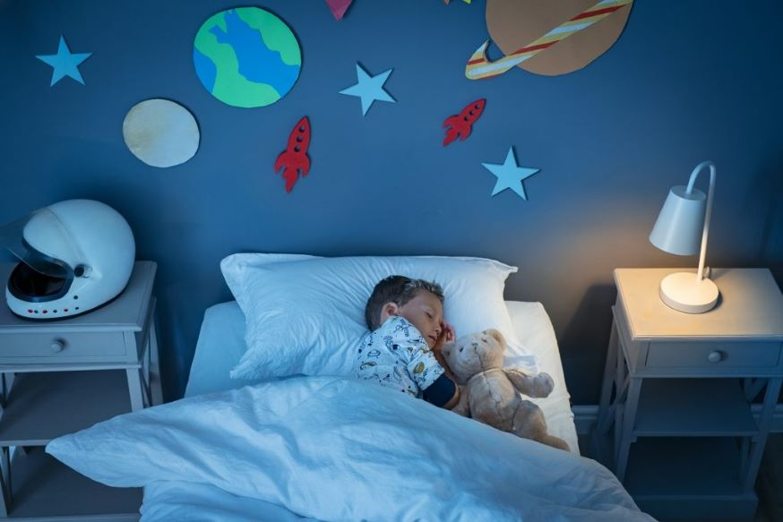
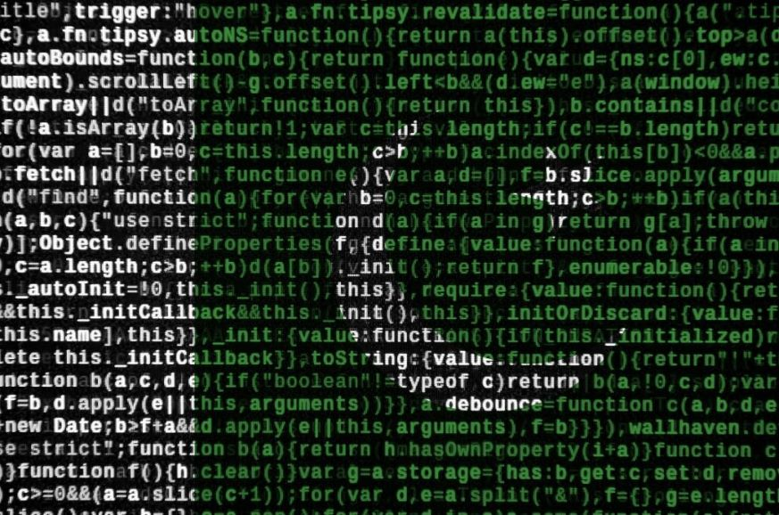
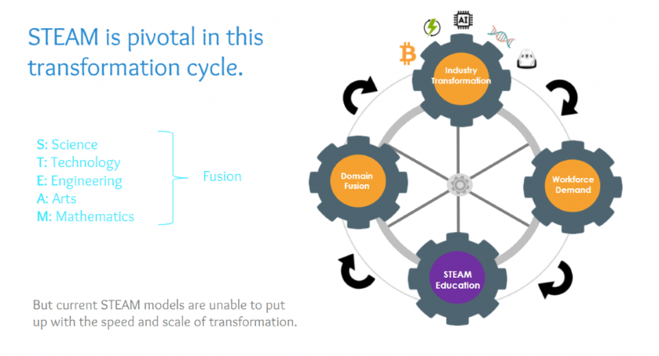

Care este scopul educației moderne?
Scopul educației moderne este de a oferi studenților cunoștințele și de a-i instrui pentru viață. Un student după dobândirea unei astfel de educații va putea face față provocărilor din viața practică mai eficient și poate contribui, de asemenea, pozitiv la îmbunătățirea socială.
Nevoia de educație modernă
Modernizarea este necesară nu numai pentru că programele academice au devenit depășite, ci și pentru că pregătește studenții pentru progresele tehnologice care au loc cu viteze vertiginoase. Îi face pe studenți adepți în utilizarea atât a abilităților tradiționale, cât și a expertizei tehnologice cu aceeași ușurință, astfel încât să devină adaptabili la vremurile în schimbare.

Actualul sistem de învățământ face nedreptate cu oamenii de rând, restrângându-le astfel încât să nu poată face față complexității vieții private și publice. Lumea de astăzi este competitivă cu toate tipurile de provocări în fața umanității, așa că devine necesar ca sistemul de învățământ să fie suficient de flexibil pentru a pregăti studenții pentru acest scenariu în continuă schimbare.
Codificarea educației:
Un aspect major al sistemelor moderne de educație este că oferă o înțelegere teoretică prin care putem vedea lumea într-o lumină diferită. În această etapă, majoritatea oamenilor se bazează pe manuale scrise de savanți care fie nu aveau atât de experimentat, fie au scris text cu câteva decenii în urmă.
Rolul Academiei
Instituțiile academice superioare joacă un rol important în modernizarea sistemului de învățământ prin producerea de profesioniști competenți prin diferite cursuri oferite la nivel postuniversitar. Aceste instituții pregătesc studenții pentru un viitor competitiv și îi echipează cu abilitățile necesare pentru cerințele de zi cu zi.
Nevoia de educație modernă
Instituțiile de învățământ superior nu sunt menite doar să producă profesioniști buni, ci și cetățeni capabili care pot contribui la construirea unei națiuni puternice. Astfel, ei trebuie să-și joace rolul prin inițierea de reforme în sistemul tradițional de învățământ, astfel încât decalajul dintre viața reală și mediul academic să fie umplut.
Nevoia de educație modernă pentru viitor
Viitorul oricărei țări sau societăți depinde de calibrul generației sale actuale, ceea ce îi face necesar să se echipeze cu toate informațiile esențiale legate de cele mai noi tehnologii, abilități de comunicare, abilități de conducere etc. Acest lucru îi va face suficient de competenți pentru a face față provocările epocii moderne.
Provocări cu care se confruntă sistemul modern de învățământ
În ciuda tuturor avantajelor menționate mai sus, există puține probleme pe care sistemele educaționale moderne le-ar fi putut cauza din cauza creșterii rapide a tehnologiei.
1. Conformitate:
Pentru a atinge obiectivele sau țintele organizaționale, angajații sunt obligați să urmeze un set de reguli care le pot afecta libertatea și creativitatea individuală.
2. Pierderea responsabilității:
Odată cu creșterea specializării, indivizii se simt mai puțin responsabili pentru creșterea generală a organizației. S-a văzut că adesea organizațiile dau vina pe „globalizare” pentru toate problemele lor, în ciuda lipsei implementării adecvate a programelor de formare și dezvoltare a angajaților.
3. Lipsa unei comunicări adecvate:
Din cauza supracomplicațiilor și a termenelor limită mai scurte, de multe ori există o comunicare greșită între diferitele secțiuni și echipe, ceea ce afectează negativ performanța generală a companiei.
Condiția educației moderne în Pakistan
Sistemul de învățământ pakistanez are nevoie de reforme în aproape toate sectoarele a căror configurație modernă ar putea reduce povara studenților. Sectorul educațional al țării noastre suferă de diferite probleme din cauza lipsei de implementare adecvată a reformelor. Printre acestea, lipsa cadrelor didactice de calitate, programele nestandardizate, metodele de predare învechite etc. sunt cele mai proeminente. Pentru a face față acestei probleme serioase, guvernul ar trebui să ia inițiative concentrându-se pe programe de formare a profesorilor pentru a oferi competențe moderne de predare.

Deoarece curriculumul nu are un sistem formal de evaluare, nu ajută elevii să-și determine zonele slabe. Starea actuală a educației moderne în Pakistan
1. Manuale:
Manualele pregătite de edituri private nu dispun de informații de calitate și sunt adesea confundate de studenți.
2. Profesori:
Profesorii nu sunt pregătiți corespunzător pentru a inspira elevii să învețe lucruri noi, ceea ce are ca rezultat un nivel scăzut de motivație în rândul lor.
3. Sistemul educațional
Modul convențional de educație oferă doar cunoștințe teoretice, dar nu reușește să ofere experiență practică care nu poate fi compensată prin lecții la clasă sau prin învățare livrestică.
Educația modernă este educația STEAM
STEAM este un acronim care înseamnă Știință, Tehnologie, Inginerie, Artă și Matematică. În timp ce sistemul de învățământ tradițional se concentrează doar pe disciplinele de matematică și științe la nivel primar și secundar, s-a transformat în educație STEAM datorită focalizării sale mai ample.

Acesta este motivul pentru care studenții sunt încurajați să se concentreze pe artă la nivel preuniversitar, deoarece ajută la dezvoltarea abilităților de gândire creativă, care este la fel de importantă atât în domeniul cantitativ, cât și în cel calitativ. În viitorul apropiat, universitățile se vor concentra pe educația STEAM ca parte a curriculum-ului lor formal la diferite niveluri.
Tendințele moderne în educație
Astăzi, educația nu se mai limitează la lecțiile de la clasă, deoarece a devenit o parte a procesului de creștere a elevilor. Odată cu apariția tehnologiei moderne, institutele de învățământ au încercat să introducă noi metode și instrumente care ajută la dezvoltarea diferitelor abilități între ele.
Accentul pe învățarea pe tot parcursul vieții și metodologiile de predare s-a transformat în cursuri online care permit studenților să participe la cursuri din orice colț al lumii. În timp ce sistemul de învățământ tradițional se concentrează pe teorie, tendințele moderne includ și experiența practică. În acest fel, elevii vor putea face lucrurile practic cu îndrumarea adecvată din partea profesorilor.
În viitorul apropiat, va avea loc o schimbare semnificativă în sistemul de învățământ actual datorită apariției modelelor hibride care ar putea îndeplini cu succes cerințele tuturor părților interesate implicate, cum ar fi elevii, profesorii și părinții etc.
Tendințe moderne în sistemul educațional
- Educatorii încearcă să facă procesul de învățare mai practic, concentrându-se pe studiul autonom.
- Globalizarea a crescut cererea de învățare pe tot parcursul vieții în rândul tinerei generații prin includerea diferitelor competențe în curriculum.
- Profesorii nu se limitează doar la predarea la clasă, ci și susțin prelegeri online prin platforme virtuale.
- Studenții se concentrează mai mult pe obținerea de experiență practică decât pe cunoștințe limitate bazate pe teorie.
- Părinții și profesorii consideră performanța academică a unui elev ca o măsură a succesului său, mai degrabă decât dezvoltarea completă a personalității.
- Studenții sunt forțați să își aleagă calea de carieră în primele etape ale studiilor lor academice, ceea ce le limitează creativitatea.
- Există o lipsă de programe adecvate de formare a profesorilor, astfel încât aceștia nu pot oferi abilități moderne de predare printre ei.
- Multe universități și colegii online funcționează fără recunoașterea adecvată din partea autorităților guvernamentale.
- Sectorul privat a introdus diferite metode inovatoare pentru furnizarea educației, dar majorității acestor institute le lipsesc standarde de calitate, profesori, studenți și programe de studii. Problema apare din cauza absenței unei autorități centralizate care ar putea controla activitățile legate de instituțiile de învățământ din sectorul privat.
Concluzie
În viitor, sistemul de învățământ va fi mai practic, iar studenții se vor bucura să învețe diferite abilități care îi ajută să devină oameni mai buni în domeniile lor respective.
Sistemele care rulează în prezent în modul online ar putea fi înlocuite cu moduri hibride, cum ar fi programele de învățare mixtă, datorită naturii sale flexibile.
La fel ca și astăzi, lipsa standardelor comune este principala problemă pentru toate părțile interesate implicate în activitățile educaționale, fie că este vorba despre profesori sau instituții de învățare.